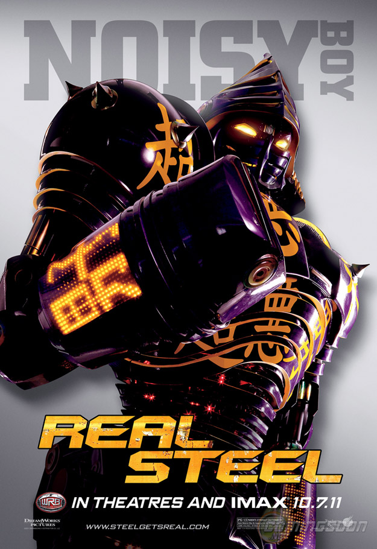
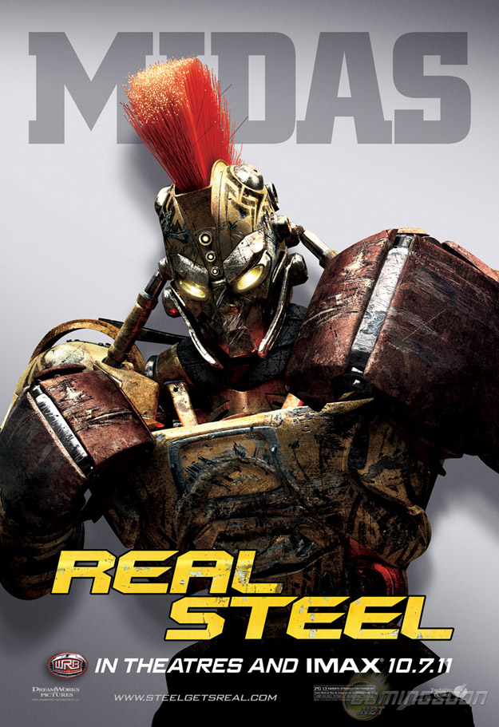
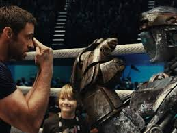

Tema principal
El tema principal de la película "Gigantes de Acero" es la relación entre un padre y un hijo, ambientado en un mundo futurista donde los combates de robots son el deporte más popular. A través de la historia de Charlie Kenton y su hijo Max, la película explora temas de redención, perseverancia, y la importancia de los lazos familiares.
Personajes Principales:

- Charlie Kenton: Es un antiguo boxeador que ahora se gana la vida participando en peleas de robots. Es un personaje complejo con una historia de altibajos en su carrera y relaciones personales. A lo largo de la película, se muestra como un hombre con talento pero también con defectos, que encuentra una oportunidad de redención a través de la relación con su hijo y su robot de boxeo.
Max Kenton: Es el hijo de Charlie. Es un niño apasionado por el boxeo de robots y ansioso por conectarse con su padre, a quien apenas conoce. A lo largo de la película, Max demuestra ser inteligente, valiente y determinado, encontrando una forma de relacionarse con su padre a través de su amor compartido por los robots y el deporte.
Atom: Es el robot de boxeo principal de la película, encontrado por Max en un depósito de chatarra. Aunque es un robot de segunda mano y considerado obsoleto, tiene una personalidad única y habilidades sorprendentes en el ring. Atom se convierte en el vínculo central entre Charlie y Max, y a través de sus peleas, enseña lecciones de perseverancia, coraje y determinación.
Características:

- **Emoción y acción:** La película está repleta de secuencias emocionantes y emocionales, especialmente durante las peleas de robots.
- **Desarrollo de personajes:** Tanto Charlie como Max experimentan un significativo desarrollo a lo largo de la película, pasando de una relación distante a una más cercana y amorosa.
- **Tecnología futurista:** El mundo en el que se desarrolla la película está lleno de avances tecnológicos, destacando los gigantes robots de acero controlados por humanos.
- **Elementos deportivos:** La trama gira en torno a los combates de robots, lo que añade una dinámica deportiva y de competición a la historia.
- **Mensajes positivos:** La película transmite mensajes sobre la importancia de la familia, la superación personal y la lucha por los sueños.
Movimientos especiales del robot
- Jab: Es un golpe rápido y recto lanzado con el brazo delantero. Se utiliza principalmente para medir la distancia, mantener al oponente a raya y establecer combinaciones de golpes.
- Directo: Es un golpe recto y potente lanzado con el brazo trasero. Tiene como objetivo principal alcanzar al oponente con la máxima fuerza posible. Es efectivo para causar daño y abrir la defensa del oponente.
- Gancho: Es un golpe circular lanzado con el brazo curvado en un ángulo. Puede ser dirigido hacia la cabeza o el cuerpo del oponente. Los ganchos tienen el potencial de causar un gran daño debido a su torque y velocidad.
- Uppercut: Es un golpe ascendente lanzado desde abajo hacia arriba, dirigido principalmente hacia la barbilla o el cuerpo del oponente. Es útil para alcanzar a un oponente agachado o para romper su guardia.
- Esquivar: No es un golpe, pero es una habilidad defensiva crucial en el boxeo. Consiste en moverse rápidamente fuera del camino de los golpes del oponente, ya sea moviendo la cabeza o el torso, o deslizándose lateralmente.
- Contraatacar: También conocido como contra golpe, es la habilidad de lanzar un golpe justo después de esquivar un golpe del oponente. Requiere una buena anticipación y rapidez para capitalizar la apertura creada por la defensa exitosa.

Conclusión:
"Gigantes de Acero" ofrece una experiencia emocionante y entretenida que combina acción, tecnología y emociones. Aunque la trama pueda parecer predecible en ciertos momentos, la química entre los personajes y las impresionantes secuencias de acción hacen que la película sea una opción sólida para quienes buscan una historia inspiradora sobre el poder del amor y la determinación.
Crítica:
Aunque "Gigantes de Acero" ha sido elogiada por su acción y efectos visuales, algunos críticos señalan que la trama puede caer en convencionalismos y clichés típicos de las películas sobre deportes y relaciones familiares. Sin embargo, la interpretación sólida de los actores principales y la dirección habilidosa compensan en gran medida estas deficiencias, haciendo que la película sea una experiencia satisfactoria en general.